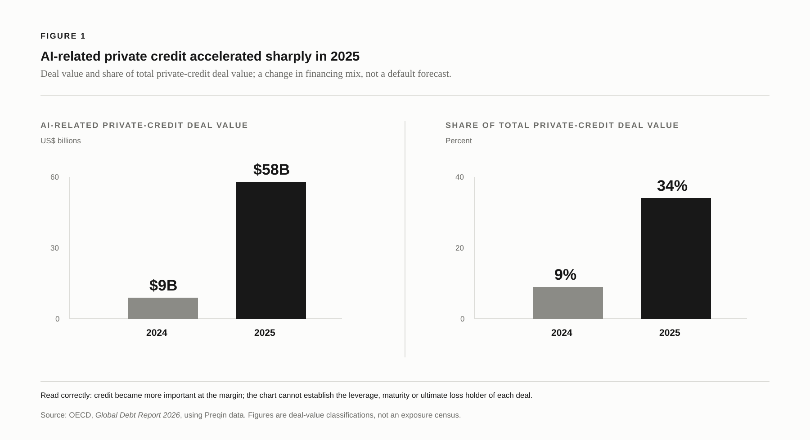
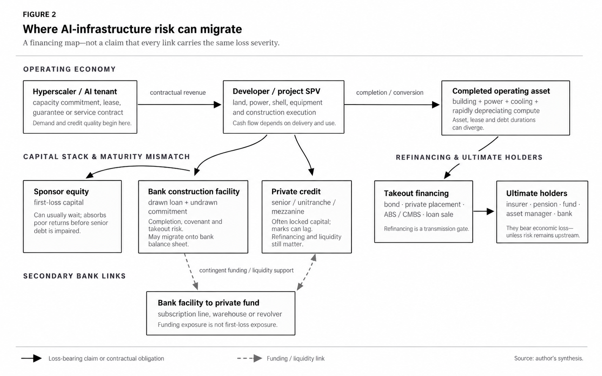
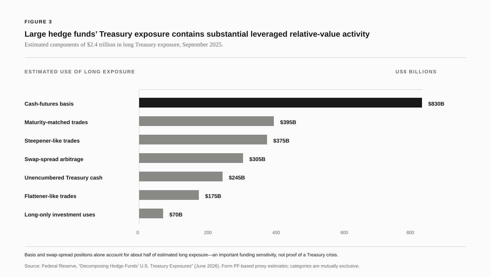
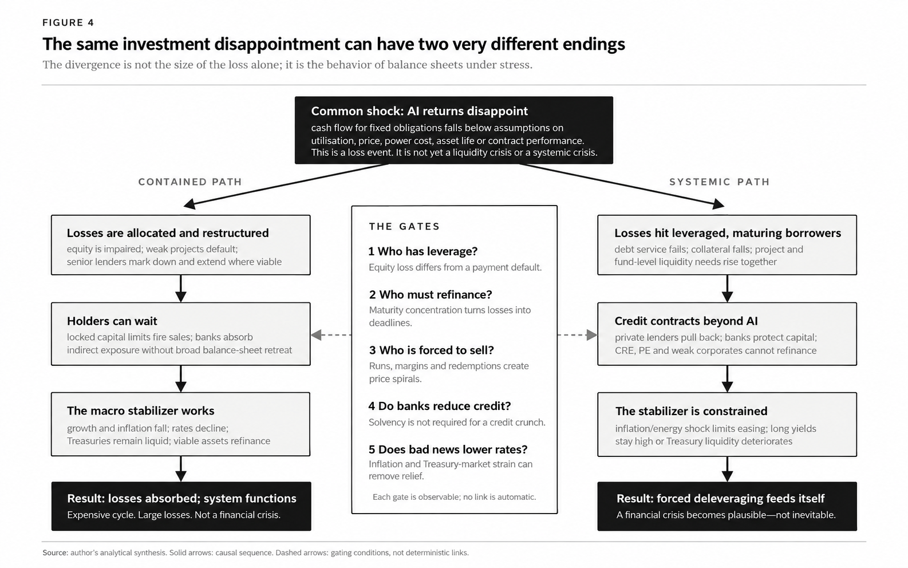

The question is not whether AI is a bubble. It is whether disappointing returns on AI infrastructure would force enough balance sheets to adjust at once that the losses escape the firms and investors who made the original bet.
That distinction is easy to blur. A data centre can prove economically useful while still producing a poor financial return. An equity holder can lose most of an investment without triggering a default. A lender can carry an impaired loan without being forced to sell it. A fund can gate redemptions without becoming insolvent. A Treasury market can suffer a severe liquidity episode without investors deciding the United States will not repay its debt.
Those are different states of the world:
loss ≠ insolvency ≠ funding stress ≠ forced selling ≠ systemic crisis.
A serious account of the risk has to locate the transitions between them.
The financing perimeter is changing
The strongest fact is not a valuation judgment. It is that AI infrastructure is becoming more dependent on external finance. The Bank of England’s July 2026 Financial Stability Report says AI companies are increasingly using the financial system—particularly debt—to finance infrastructure, and estimates that more than half of the external financing need for data centres between 2026 and 2028 could be funded with debt.1

This does not mean the core hyperscalers are interchangeable with the weaker companies in their orbit. A profitable, investment-grade company that borrows against a large operating business is not a highly levered compute provider whose debt service depends on a narrow set of utilisation and contract assumptions. “AI debt” is therefore not a useful unit of analysis. The relevant unit is the balance sheet: its cash flows, collateral, maturities, covenants, guarantees and refinancing plan.
FACT. External debt financing of AI infrastructure is growing rapidly.
INFERENCE. The result is a larger credit channel through which weak project economics could matter.
NOT ESTABLISHED. That the aggregate AI sector is already overlevered or that a broad default cycle is imminent.
What a disappointing return would actually look like
“AI returns disappoint” should not mean that demand vanishes, that data centres become useless, or that an AI company’s share price falls. The relevant shock is more specific: realised cash flow from AI capacity falls persistently below the assumptions embedded in project or corporate financing—because delivered capacity, utilisation, realised price, operating cost, equipment life, contract performance or refinancing conditions are worse than expected—such that equity is impaired and some borrowers cannot comfortably service or refinance fixed obligations.
That definition is deliberately balance-sheet specific. A profitable hyperscaler can fund infrastructure against a broad operating business; an AI cloud provider or project vehicle may depend much more directly on a small number of contracts, a timely build and a takeout refinancing. A data centre also combines long-lived land, power and building infrastructure with servers and networking equipment that can have shorter economic lives. The lease, the hardware and the debt may therefore run on different clocks.3
The operating variables are straightforward but not reducible to one public “AI break-even” number: utilisation multiplied by realised price; power, cooling, network, rent, maintenance and replacement costs; build and grid-connection timing; hardware and facility lives; and the capital structure, maturity profile, covenants and debt-service coverage. Contract design is equally important: a take-or-pay commitment, creditworthy guarantor and limited termination rights can protect cash flow; usage-based revenue, tenant concentration, weak recourse or a mismatch between contract and debt duration can expose it.
The bearish version of the story should not be assumed. Lower compute prices can compress margins, but they can also stimulate usage and lift utilisation. Core cloud demand and long-dated commitments provide real support, while contract backing does not make all revenue fixed or eliminate execution and refinancing risk. The evidence supports a conditional credit question, not a conclusion that the sector has already failed its economics. The right test is whether cash flow available for fixed obligations weakens across the exposed structures—not whether AI equity prices merely re-rate.

Where a bad investment actually lands
The financing path typically begins with an AI tenant’s capacity commitment, lease, service contract or guarantee. A developer or special-purpose vehicle then uses sponsor equity and construction debt—often a mix of bank finance and private credit—to build the site. On completion, the project may be refinanced through a bond, private placement, loan sale or securitised structure. The ultimate economic risk can reside with insurers, pensions, private funds, asset managers or banks.
That path has two implications that pull in opposite directions.
First, it creates ways for losses to migrate beyond the original tenant and developer. If a project cannot service its debt, lenders can take real impairments—but only after sponsor equity, contract support, collateral and seniority protections have absorbed or allocated the shock. If those lenders must cut new lending or call on bank facilities, the shock can travel further.
Second, the path contains substantial waiting capacity. Sponsor equity takes the first loss. Many private-credit vehicles have locked capital. A lender whose funding is stable can amend, extend, restructure, mark down and wait. None of that makes the loss disappear; it determines whether it becomes a fire sale.
The critical difference is liability structure. A conventional closed-end private-credit fund is not a bank funded by deposits redeemable tomorrow. It can be opaque and its marks may lag economic reality, but its capital may also allow it to hold a bad loan through a multi-year workout. The Fed estimates U.S. private-credit loans at about $1.4 trillion in the second half of 2025. It also reports that semi-liquid funds held about $241 billion in net assets, or roughly 20% of private-credit net assets—large enough to matter, but not the entire market.4
That semi-liquid segment is the more obvious run point. Interval funds and perpetual BDCs promise some redemption capacity while holding assets that do not trade daily. A run need not mean an immediate forced sale: redemption limits can be enforced. But persistent requests can reduce cash, make new credit scarcer and turn private credit from a patient holder into a procyclical lender. That is a meaningful macro channel even without a classic bank run.
The bank bridge is real, but it is not a completed crisis mechanism
Banks are neither absent from private credit nor automatically its first-loss absorber. The Fed reports $2.6 trillion of bank credit commitments to nonbank financial institutions at the end of 2025; private-equity funds, BDCs and private-credit vehicles were the largest category.5 Those links include revolvers, warehouse facilities, subscription lines and other forms of contingent funding. A commitment may be undrawn, collateralised or structurally senior to a portfolio-company loan.
The right conclusion is therefore conditional. Private-credit stress can reach regulated banks, especially if losses and draws occur together. But the existence of a bank-fund link is not evidence that banks own the same risk, in the same amount, with the same priority as the fund’s investors.
The banking sector’s current resilience also has to remain inside the frame. In the Federal Reserve’s 2026 stress test, the 32 tested large banks absorbed more than $708 billion of hypothetical losses and remained above their minimum capital requirements.6 That is not proof against an unmodelled funding shock, concentrated exposure or a failure of market functioning. It is, however, direct evidence against writing as if every sizeable credit impairment implies bank insolvency.
The more plausible bank-mediated problem is a simultaneous decision to conserve capital. Banks need not fail to produce a credit crunch. If losses, uncertainty and contingent draws make many lenders less willing to extend marginal credit at once, unrelated borrowers—commercial real estate, private-equity portfolio companies and lower-quality corporates—can discover that their refinancing market has changed.
This is the first genuinely important bridge:
AI-project losses → lender risk aversion → less refinancing for unrelated leveraged borrowers → defaults and restructurings → further caution by lenders.
It remains a hypothesis, not a forecast. The observable test is not merely a widening spread on AI-related debt. It is a deterioration in both price and availability of credit outside AI.
Housing is an amplifier with a high activation threshold
Housing belongs later in the story, not at the centre of it. The present U.S. mortgage system gives many homeowners unusually long-duration, fixed-rate debt and a powerful reason not to sell. Weak transaction volume is therefore not itself evidence of a forced-sale spiral.
For housing to amplify the credit shock, labour-market stress must remove households’ ability to wait. The relevant cluster is unemployment, serious mortgage delinquency, distressed listings, inventory and mortgage-credit availability—not a single national house-price series. Without that cluster, an AI investment bust can be economically painful while leaving household balance sheets largely outside the propagation mechanism.
The Treasury market is the crucial shock absorber
In an ordinary recession, risk assets fall, growth and inflation expectations weaken, Treasuries rally and the Federal Reserve can ease. Lower benchmark rates do not erase losses, but they make viable assets easier to refinance and allow distressed buyers to emerge. This is the mechanism that can convert a brutal repricing into a reallocation of ownership rather than a systemic collapse.
That is why the Treasury market matters here. The systemic case does not require the United States to “run out of buyers,” the dollar to lose reserve status or a failed Treasury auction. It requires something narrower but still serious: impaired market functioning or sustained high rates at the point when deleveraging needs a liquid safe asset and lower funding costs.
Large hedge funds are an important part of that plumbing. Federal Reserve staff estimate that their gross Treasury exposure reached about $4 trillion in September 2025, including $2.4 trillion long and $1.6 trillion short. A large share of the long exposure was associated with relative-value strategies—including cash-futures basis and swap-spread trades—that are typically financed through repo and can be sensitive to margins and dealer balance-sheet capacity.7

The 2020 Treasury episode established that a flight to safety can coincide with market-functioning stress. More recently, Fed research describes the rapid April–May 2025 unwind of hedge-fund swap-spread positions during the tariff shock.8 These positions can contribute to market-functioning stress when a rapid unwind overwhelms intermediation; they do not make Treasury dysfunction automatic.
There are also circuit breakers. The New York Fed’s Standing Repo Facility provides an explicit channel through which eligible counterparties can obtain financing against Treasuries and agency securities. Central-clearing reforms should reduce some counterparty and intermediation risks, although the relevant compliance deadlines mean that this protection should not be treated as fully operational today.9 A severe, fast unwind can still overwhelm dealer capacity temporarily; the policy architecture simply makes “Treasury dysfunction” a much more disciplined claim than “Treasury collapse.”
Why oil and inflation matter only as state variables
The same credit loss can have different consequences in different macroeconomic environments.
In an absorptive regime, falling growth also lowers inflation. Policy can ease, Treasury yields decline and refinancing becomes cheaper. In an adverse regime, a supply shock raises energy and transport costs while growth weakens. Inflation remains elevated, policy is constrained and long rates may stay high. The loss has not changed; the economy’s ability to absorb it has.
The Federal Reserve’s May 2026 Financial Stability Report explicitly identifies prolonged conflict and commodity shortages as a route to both higher inflation and weaker growth, and notes that higher interest rates can reduce credit supply through financial intermediaries.10 This is the proper role for the geopolitical material in the thesis. It is an amplifier of a separate financial shock, not a self-sufficient story about a “petrodollar” collapse.
The latter should be treated as an extreme tail. Dollar centrality rests on capital-market depth, Treasury collateral, cross-border dollar debt, settlement networks, trade invoicing and network effects—far more than oil invoicing. A gradual change in reserve behaviour or an individual foreign investor’s Treasury allocation does not establish a near-term dollar crisis.
The fork in the road

The contained path is straightforward. AI returns disappoint; equity is repriced; weak projects restructure; lenders take marks; locked capital and bank buffers prevent broad fire sales; slower growth produces lower rates; viable assets change hands at lower valuations. There can be very large losses in this outcome. It remains an expensive investment cycle, not a financial crisis.
The systemic path is demanding. Losses need to be concentrated in leveraged borrowers with near maturities. Private lenders and banks need to retreat simultaneously. The refinancing shock needs to spread to unrelated credit markets. Employment weakness must be large enough to produce forced household sales. And, at the same time, inflation or Treasury-market stress must prevent rates from giving normal relief.
That conjunction is why the systemic scenario is a tail, not a baseline. It is also why it is worth watching. The danger is not proportional to the number of dollars invested in AI; it is proportional to the amount of loss that lands on institutions that cannot wait, cannot refinance or must sell.
A short dashboard for falsifying the thesis
The argument should become weaker—not stronger—if the following occur:
- AI cash flows catch up. Realised utilisation, price and contribution margin support the installed capital base; equipment lives and debt-service coverage remain consistent with underwriting despite high capex.
- Infrastructure debt remains well covered. A sharp AI-equity correction occurs with normal debt-service coverage, limited defaults and orderly refinancing.
- Private credit holds the losses. Write-downs appear without a sustained redemption problem, forced sales or a material contraction in new lending.
- The bank bridge does not transmit. Facilities, provisions, capital ratios and general lending standards remain stable despite private-credit impairments.
- Treasuries behave normally in risk-off episodes. Long yields fall, repo remains orderly and market depth is adequate while credit spreads widen.
Conversely, the thesis should be updated upward only when the combination appears: rising non-accruals and restructurings in AI infrastructure; reduced financing for unrelated leveraged borrowers; more defensive bank lending; evidence of forced asset sales; and a risk-off episode in which high inflation or Treasury-market strain prevents the normal decline in rates.
Conclusion
AI investment is becoming a more credit-dependent enterprise. That changes the financial-stability question. But it does not eliminate the system’s substantial capacity to absorb losses: equity takes the first hit; much private capital is locked; banks have more capital than before 2008; homeowners generally have fixed-rate mortgages; policy facilities exist; and Treasuries normally provide relief in a downturn.
For an AI bust to become a financial crisis, those absorbers must fail together. The relevant analytical questions are therefore prosaic and observable: who has leverage, who can wait, who must refinance, who is forced to sell, whether banks contract credit, and whether bad economic news still lowers interest rates.
That is the line between a costly technological overinvestment cycle and a systemic crisis.
Sources and methodological note
This is an analytical synthesis, not a probability forecast. Public disclosure is much better for banks, listed companies and Treasury markets than for private-credit and project-finance exposures. Where ownership, seniority or contingent exposures cannot be established from public data, the uncertainty is left visible rather than filled with an assumed number.
Disclosure: AI tools assisted with source discovery, synthesis, causal mapping and drafting. Quantitative claims were checked against the linked institutional sources. The argument was treated as a hypothesis to challenge rather than a conclusion to defend.
Bank of England, Financial Stability Report, July 2026. The report also identifies the risk that debt financing be long-dated relative to the economic life of AI-related assets.↩︎
OECD, Global Debt Report 2026, using Preqin data for the Figure 1 deal-value series.↩︎
Bank of England, Financial Stability Report, July 2026; Amazon, Form 10-Q, June 2026, on the timing and usage-based recognition of AWS revenue and long-term obligations; and Microsoft, Form 10-K, June 2026, on server and network-equipment useful lives.↩︎
Federal Reserve, Financial Stability Report, May 2026 — Funding Risks.↩︎
Federal Reserve, Financial Stability Report, May 2026 — Leverage in the Financial Sector.↩︎
Federal Reserve, 2026 stress-test results. Stress tests are scenario exercises, not proofs against every market or funding shock.↩︎
Federal Reserve, “Decomposing Hedge Funds’ U.S. Treasury Exposures” (June 2026). Estimates are based on Form PF proxies, not trade-level observation.↩︎
Federal Reserve, “Decomposing Hedge Funds’ U.S. Treasury Exposures” (June 2026). Estimates are based on Form PF proxies, not trade-level observation.↩︎
New York Fed, Standing Repo Facility operating policy and SEC, Treasury clearing implementation.↩︎
Federal Reserve, Financial Stability Report, May 2026 — Near-Term Risks.↩︎